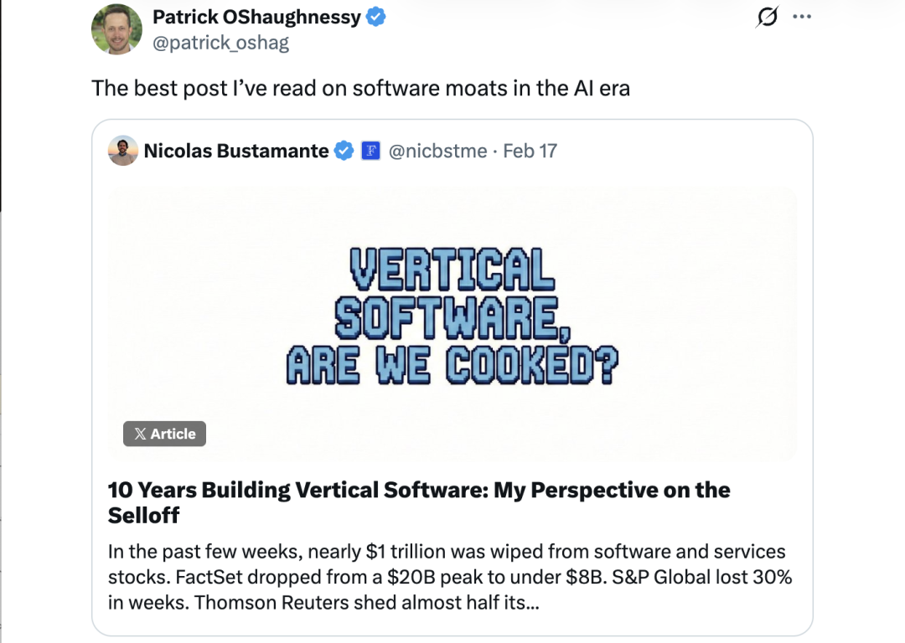
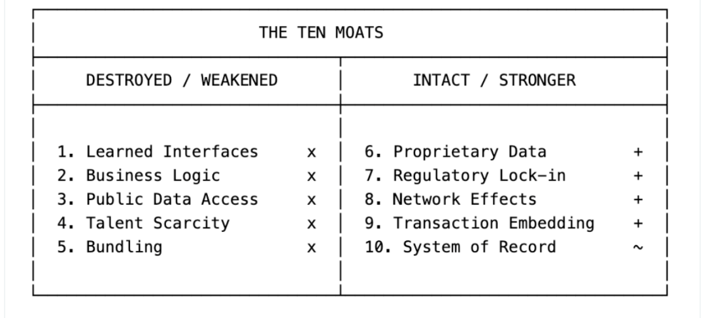
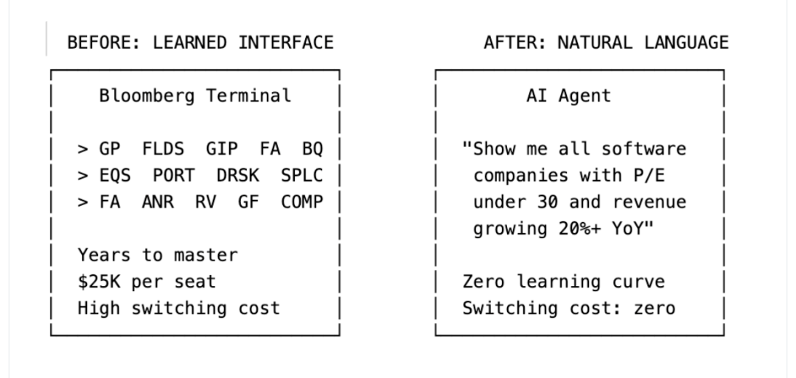
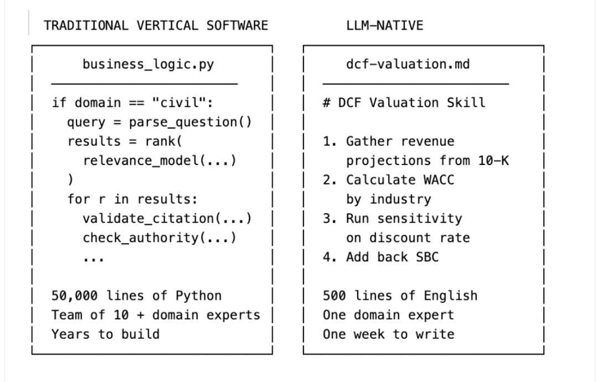
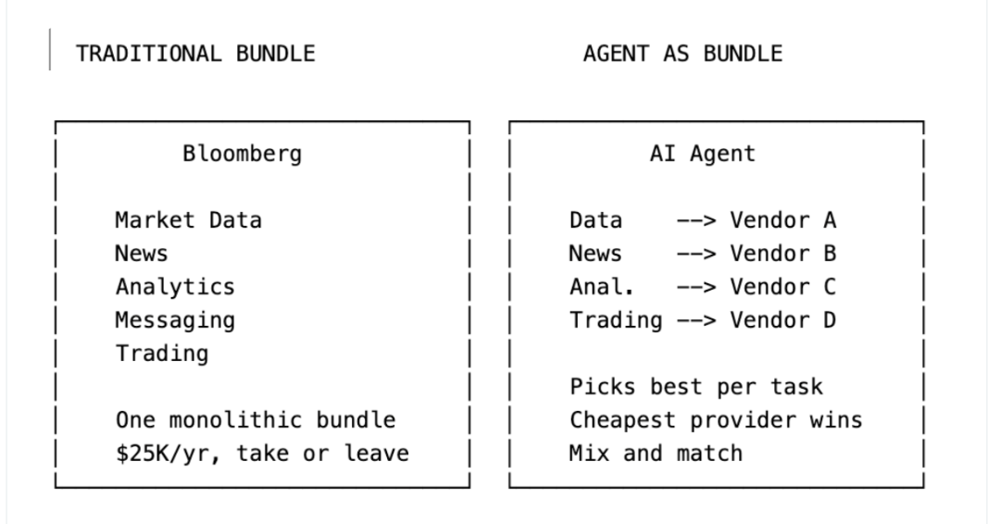

作者：Nicolas Bustamante（Doctrine联合创始人、Fintool CEO）
写个备注： Anthropic的桌面智能体Cowork发布行业插件后，软件股遭遇近万亿美元市值蒸发，被称为"软件行业的DeepSeek时刻"。2月17日，一篇来自垂直软件创业者的长文在社交媒体上引发广泛讨论。华尔街知名投资人Patrick O'Shaughnessy转发评价说：我读过的关于AI时代软件护城河最好的文章。
我整理了一个中文版，并补充了国内可能不熟悉的产业背景。文章值得一读，因为最近国内软件业，也是被受冲击。即使大家不是这个领域的，也可以看看，因为作者对护城河理论非常精通。

过去几周，软件和服务类股票市值蒸发了近1万亿美元。FactSet（美国金融数据与分析平台，为投资机构提供财务数据、分析工具和研究服务，年费约1.5万美元/用户）从200亿美元的峰值跌破80亿。S&P Global（标普全球，全球最大的信用评级、金融数据和指数公司之一，旗下拥有标普信用评级和标普500指数）几周内市值缩水30%。Thomson Reuters（汤森路透，全球领先的新闻与专业信息服务商，为金融、法律等行业提供数据和分析）近一年市值几乎腰斩。标普500软件与服务指数——涵盖140家公司——年初至今下跌20%。
上周，Anthropic为Claude的Cowork发布了行业专属插件。Cowork是Anthropic推出的AI智能体桌面工具，专为知识工作者设计，能够自主处理复杂的研究、分析和文档工作流——它不是简单的聊天机器人，而是一个能读取本地文件、执行多步骤任务、通过插件和MCP连接外部服务的桌面agent。这一发布直接引发了约2850亿美元的软件股抛售，被称为"软件行业的DeepSeek时刻"。
华尔街说这是一场恐慌。而我，过去十年一直在做垂直SaaS。先是创办了Doctrine（2016年成立于巴黎，目前是欧洲最大的法律AI平台，在法国、德国、意大利、西班牙等国服务超过2.7万名法律专业人士，与LexisNexis、Westlaw竞争），然后创办了Fintool（YC W23孵化的AI股权研究平台，总部在旧金山，为对冲基金等机构投资者提供基于AI的金融分析服务，直接与Bloomberg和FactSet竞争）。
我做过的那种软件，正是LLM现在威胁的对象。而我现在做的这种软件，正是发起威胁的那一方。我站在这场颠覆的两侧。
我看到的是：LLM正在系统性地拆除让垂直软件具有防御力的那些护城河。但不是全部。 结果是一次重新洗牌——什么样的垂直软件仍然有价值、应该享受什么估值倍数，答案正在被改写。
本文将讨论：
让垂直软件可防御的十条护城河，以及LLM对每一条做了什么 为什么这次抛售在结构上是合理的，但在时间节奏上被夸大了 真正的威胁到底是什么（不是你想的那样） 什么将取代垂直软件 垂直软件行业的下一步
垂直软件的十条护城河（以及LLM对每条做了什么）
垂直软件是为特定行业构建的软件。Bloomberg之于金融，LexisNexis（律商联讯，全球最大的法律和商业信息数据库之一，隶属于RELX集团）之于法律，Epic（美国最大的电子病历系统供应商，占据美国医院市场约35%份额）之于医疗，Procore（美国领先的云端建筑项目管理平台，2021年上市，服务全球150多个国家的1万多客户）之于建筑，Veeva（Veeva Systems，专注生命科学行业的云软件公司，为全球制药和生物技术企业提供CRM和数据管理解决方案）之于生命科学。
这些公司有一个共同特征：收费很高，客户很少离开。FactSet每个用户年费超过1.5万美元。Bloomberg Terminal（彭博终端）每个席位年费2.5万美元。LexisNexis每月向律所收取数千美元。客户留存率普遍在95%左右。
我认为共有十条不同的护城河。LLM正在攻击其中一些，同时对另一些毫无影响。理解哪些会被攻破、哪些不会——这就是全部的关键。

1. 习得性界面（Learned Interfaces） → 被摧毁
一个Bloomberg Terminal用户花了数年时间学习键盘快捷键、功能代码和导航模式。GP、FLDS、GIP、FA、BQ——这些不是直觉操作，它们是一门语言。一旦你流利掌握，切换到另一个平台就意味着重新变成文盲。
我无数次听到这样的说法：「我们是FactSet派的」「我们是Lexis所」「我们是Bloomberg行」。这些不是在评价数据质量或功能集，而是在描述软件肌肉记忆。人们已经花了十年学习这个工具，这种投入无法迁移。
这是最被低估的护城河。知识工作者付费，是为了不必重新学习一套花了十年才掌握的工作流程。界面本身就是价值主张的核心组成部分。
我在Doctrine亲历了这一点。我们有一个设计团队和一小支客户成功经理队伍，他们的全部工作就是帮律师上手我们的界面。每一次UI改动都是一个项目：用户调研、设计冲刺、谨慎发布、手把手辅导。我们会花好几周来重新设计一个分面搜索过滤器，因为律师们已经对旧版本形成了肌肉记忆。界面不是一个功能，它就是产品。维护它是我们最大的成本中心之一。
在Fintool，我们没有任何上手培训。没有CSM教人如何使用产品。用户用自然英语输入他们想要的，直接得到答案。不存在需要学习的界面，因为一切都是对话。那整个成本中心——设计师、CSM、UI变更管理——统统不存在了。对话界面吸收了所有那些脚手架。
LLM把所有专有界面折叠成一个：Chat。

想想一个金融分析师今天在Bloomberg Terminal上做什么。他们导航到股票筛选功能，用专用语法设置参数，导出结果。切换到DCF模型构建器，输入假设条件，运行敏感性分析，导出到Excel，做一个报告。每一步都需要习得的界面知识，每一步都在强化切换成本。
现在想想，同一个分析师用一个LLM agent做同样的事：
"帮我找出所有市值超过10亿美元、市盈率低于30、营收年增长率超过20%的软件公司。对排名前五的公司建立DCF模型。对折现率和终端增长率做敏感性分析。"
三句话。没有快捷键。没有功能代码。没有导航。用户甚至不知道LLM查询了哪个数据源。他们也不在乎。
当界面变成自然语言对话时，多年的肌肉记忆变得一文不值。支撑每席位2.5万美元年费的切换成本消融了。对很多垂直软件公司来说，界面就是大部分价值。底层数据是授权的、公开的或半商品化的。真正支撑高定价的是建立在数据之上的工作流。这一切结束了。
2. 定制化工作流与业务逻辑 → 蒸发
垂直软件编码了一个行业的实际运作方式。法律研究平台不只是存储判例法，它编码了引用网络、Shepardize信号（一种判例法引用追踪系统，用于验证某个判例是否仍然有效、是否被后续判决推翻或修正）、判例摘要分类体系，以及诉讼律师从案件受理到庭审的完整工作流。
这些业务逻辑花了多年才建好。它反映了与领域专家的数千次对话。在Doctrine，最难的部分不是技术，而是理解律师实际如何工作：他们如何研究判例法，如何起草文书，如何从接案到开庭构建一套诉讼策略。把这种理解编码为可用的软件，是垂直软件之所以有价值、可防御的核心。
LLM把这一切变成了一个Markdown文件。
这是最被低估的转变，我认为也是长期破坏力最大的。
传统垂直软件把业务逻辑编码在代码中：成千上万个if/then分支、校验规则、合规检查、审批工作流。由工程师历时数年硬编码——而且不是一般的工程师。你需要既能写生产代码、又真正理解该领域的软件工程师，这种人极为稀缺。找到一个既能写代码又理解诉讼工作流或DCF模型应该怎么构建的人，难度极高。每次修改业务逻辑都需要开发周期、QA、部署。
举一个我亲历的具体例子。
在Doctrine，我们构建了一个法律研究工作流，帮助律师找到与特定法律问题相关的判例。系统需要理解法律领域（民事vs.刑事vs.行政），将问题解析为可搜索的概念，跨多个法院数据库查询，按相关性和权威性排序结果，并附上完整的引用上下文。这花了一个工程师和法律专家团队好几年时间。业务逻辑分散在数千行Python代码、定制排序算法和手工调优的相关性模型中。每次修改都需要工程冲刺、代码审查、测试和部署。
在Fintool，我们有一个DCF估值技能。它告诉LLM agent如何做贴现现金流分析：该收集哪些数据，如何按行业计算WACC（加权平均资本成本），哪些假设需要验证，如何做敏感性分析，何时加回股票薪酬。它是一个Markdown文件。写它花了一周。更新它只需几分钟。一个做过500次DCF估值的基金经理，无需写一行代码就能把整套方法论编码进去。

数年的工程vs.一周的写作。这就是这场转变。
而且不只是速度的问题。Markdown技能文件在重要方面做得更好。任何人都能读懂。可审计。可以按用户定制（我们的客户自己写技能文件）。而且随着底层模型进步，它会自动变好——我们不需要动一行代码。
业务逻辑正在从专业工程师写的代码迁移到任何有领域专业知识的人都能写的Markdown文件。垂直软件公司花十年积累的业务逻辑，现在可以在几周内复制。工作流护城河正在快速消融。
3. 公开数据访问 → 商品化
垂直软件价值主张的很大一部分在于：让难以获取的数据变得可查询。FactSet让SEC（美国证券交易委员会）公告变得可搜索。LexisNexis让判例法变得可搜索。这些是真实的服务——SEC公告在技术上是公开的，但你试试去读一份200页的10-K年报原始HTML。结构在公司间不一致，会计术语密集，提取你需要的数字需要解析嵌套表格、追踪脚注引用、核对重述数字。
在LLM出现之前，访问这些公开数据需要专业软件和大量工程架构。像FactSet这样的公司构建了数千个解析器——每种文件类型一个，每家公司的特异格式一个。大量工程师在格式变化时维护这些解析器。将原始SEC文件转化为可查询数据的代码，是一项真正的竞争优势。
在Doctrine，这也需要大量工作。我们为不同的判例法构建了NLP管道：命名实体识别来提取法官、法院、法律概念。专用ML模型来按法律领域分类判决。为每个法院定制解析器——每个法院有自己的格式特点。我们的工程师花了好几年来构建和维护这些架构。这是真正令人印象深刻的技术，也是真实的护城河，因为复制它意味着数年的工作。
在Fintool，这些我们一样都没建。零NER。零定制解析器。零行业分类器。为什么？因为前沿模型已经知道如何解读一份10-K年报。它们知道Home Depot的股票代码是HD。它们理解GAAP和non-GAAP收入的区别。它们无需被教会数据结构就能解析分部披露的嵌套表格。Doctrine花了好几年构建的解析基础设施，现在是模型自带的商品化能力。
LLM让这变得轻而易举。 前沿模型从训练数据中已经知道如何解析SEC文件。它们理解10-K的结构、收入确认政策在哪里、如何核对GAAP和non-GAAP数字。你不需要构建解析器，因为模型本身就是解析器。给它一份10-K它就能回答任何问题。给它整个联邦判例法语料库它就能找到相关先例。
垂直软件花了数十年构建的解析、结构化和查询能力，现在是嵌入基础模型的商品化功能。数据并非毫无价值。但「让数据可搜索」这一层——大量价值和定价权所在——正在崩塌。
4. 人才稀缺性 → 反转
构建垂直软件需要既懂领域又懂技术的人。找到一个既能写生产代码又理解信用衍生品结构的工程师——极其稀有。这种稀缺性创造了天然的进入壁垒，历史上限制了每个垂直领域的严肃竞争者数量。
LLM彻底翻转了这条护城河。
在Doctrine，招聘极其艰难。我们不只需要好的工程师，我们需要能理解法律推理的工程师：先例如何运作、管辖权如何交叉、向最高法院上诉的理由是什么。这种人几乎不存在。所以我们自己培养。每周我们举办内部讲座，由律师教工程师法律系统实际如何运作。一个新工程师要好几个月才能上手产出。人才稀缺是一个真正的壁垒——不只是对我们，对任何想跟我们竞争的人都是如此。
在Fintool，我们完全不做这些。我们的领域专家（基金经理、分析师）直接把自己的方法论写进Markdown技能文件。他们不需要学Python。不需要理解API。他们用自然英语描述一个好的DCF分析应该怎么做，LLM来执行。工程由模型处理。领域专业知识——一直以来都是充裕资源——现在可以直接变成软件，绕过了工程瓶颈。
LLM让工程能力变得唾手可得。这意味着：过去真正稀缺的瓶颈是「懂行业的工程师」，现在领域专家不需要工程师就能直接把知识变成软件。瓶颈消失了，进入壁垒自然随之崩塌。
5. 捆绑销售 → 被削弱
垂直软件公司通过捆绑相邻能力来扩展。Bloomberg从市场数据起步，然后加上即时通讯、新闻、分析、交易和合规。每增加一个模块都在提高切换成本，因为客户现在依赖的是整个生态系统，而不只是一个产品。S&P Global以440亿美元收购IHS Markit（全球领先的商业信息和分析公司），正是这一策略。捆绑本身成为了护城河。
在Doctrine，捆绑是增长策略。我们从判例法搜索起步，然后加上法规、法律新闻、提醒、文档分析。每个模块有自己的UI、自己的培训流程、自己的客户工作流。我们构建了精密的仪表板，律师可以在上面配置关注列表、设置特定法律话题的自动提醒、管理研究文件夹。每个功能都意味着更多设计工作、更多工程、更多UI页面。这个捆绑把客户锁住了，因为他们的整个工作流已经建立在我们的生态系统之上。
LLM agent打破了捆绑护城河，因为agent本身就是捆绑。 在Fintool，提醒是一个prompt。关注列表是一个prompt。组合筛选是一个prompt。不存在每个功能对应一个独立模块。没有需要维护的UI。客户说一句「当我的持仓中任何公司在财报电话会上提到关税风险时提醒我」，就搞定了。Agent在一个工作流中调度十个不同的专用工具。它可以从一个来源拉取市场数据，从另一个获取新闻，通过第三个运行分析，然后汇总结果。用户永远不知道、也不关心背后查询了五个不同的服务。

当集成层从软件供应商转移到AI agent时，购买捆绑套件的动力就消失了。为什么要为Bloomberg的整套产品支付溢价，当一个agent可以为每项能力挑选最好（或最便宜）的供应商？
这不意味着捆绑会一夜之间消亡。管理十个供应商关系和一个供应商关系的运营复杂性差异是真实的。但趋势是明确的：agent让解绑变得可行，这在以前是不可能的。
6. 私有和独占数据 → 更强
一些垂直软件公司拥有或授权了别处不存在的数据。Bloomberg从全球交易台收集实时定价数据。S&P Global拥有信用评级和专有分析。Dun & Bradstreet（邓白氏，全球最大的商业数据和分析公司之一，维护着超过5亿商业实体的信用档案）维护着5亿多实体的商业信用档案。这些数据经过数十年积累，往往通过独家关系获得。你不能爬取，不能重建。
如果你的数据真的无法被复制，LLM让它变得更有价值，而非更少。
Bloomberg来自交易台的实时定价数据？不能爬取，不能合成，不能从第三方授权。在LLM世界中，这种数据成为每个agent都需要的稀缺输入。Bloomberg在专有数据上的定价权可能反而会增强。
S&P Global的信用评级也类似。一个信用评级不仅仅是数据——它是一个由受监管的方法论和数十年违约数据支撑的专业意见。LLM不能发行信用评级，S&P可以。
测试很简单：这个数据能否被其他人获取、授权或合成？如果不能，护城河成立。如果能，你有麻烦了。
我在两家公司都见证了这一点。在Doctrine起步时，核心价值是用行业特定的架构来组织公开判例法：分类体系、引用网络、相关性排名。但团队很早就意识到仅靠公开数据是不够的。大约五年前，Doctrine开始构建独占内容库：专有法律注释、编辑分析、独家策展评论——这些在其他地方找不到。今天，这个内容库真的很难复制，它已成为真正的护城河。再加上全面向LLM转型，Doctrine现在正处于爆发增长中。
能在这次转型中活下来的公司，是那些从「我们更好地组织公开数据」转向「我们拥有你在别处获取不到的数据」的公司。
变化在于：那个智能层过去需要多年的工程投入，现在它是模型自带的能力。甚至数据访问本身也在商品化。MCP（Model Context Protocol，模型上下文协议——Anthropic开发的开放标准，让AI agent能即插即用地连接各种外部数据源和工具，已成为行业事实标准，月下载量超过1亿次）正在把每个数据供应商变成一个插件。数十家公司已经在以MCP服务器的形式提供金融数据，任何AI agent都能查询。当你的数据作为Claude插件就能获得时，「让数据可访问」的溢价就消失了。
讽刺的是，LLM加速了这种分化。拥有专有数据的公司赢得更大。没有的则失去一切。
如果你的数据不是真正独特的——如果它可以在别处获取、授权或合成——你并不安全，你面临商品化的风险。AI agent将拥有与客户的关系。它将是用户交互的界面、用户信任的品牌、用户付费的产品。你变成了agent的供应商，而不是客户的供应商。
这是聚合理论（Aggregation Theory，由分析师Ben Thompson提出的互联网商业理论）在实时上演：聚合者（agent）捕获用户关系和利润，供应方（数据供应商）则为了接入平台而竞相压价。如果Bloomberg、FactSet和十几个较小的供应商都提供类似的市场数据，agent会路由到最便宜的那个。你的定价权蒸发，利润率被压缩，你变成了别人产品的商品化原料。
7. 监管与合规锁定 → 结构性护城河
在医疗领域，Epic的主导地位不仅是产品质量的问题，还关乎HIPAA合规（美国《健康保险流通与责任法案》，对医疗数据隐私和安全有严格规定）、FDA认证，以及医院忍受的18个月实施周期。更换电子病历供应商是一个耗时数年、耗资千万美元级别的项目，甚至直接关乎患者安全。在金融服务领域，合规要求制造了类似的锁定：审计追踪、监管报告、数据保留政策——全都嵌入了软件。
HIPAA不在乎LLM。FDA认证不会因为GPT-5的存在而变简单。SOX（萨班斯-奥克斯利法案，美国对上市公司财务报告的合规要求）合规要求不会因为Anthropic发布了新插件而改变。
Epic在医疗电子病历领域的主导地位本质上是一条监管护城河。18个月的实施周期、合规认证、与医院计费系统的集成——这些都不受LLM影响。
事实上，监管要求可能恰恰在合规锁定最强的垂直领域减缓LLM的采用。医院不能用LLM agent替换Epic，因为LLM agent没有HIPAA认证，没有所需的审计追踪，也没有经过FDA的临床决策支持验证。
8. 网络效应 → 依然粘性
某些垂直软件随着更多行业参与者使用而变得更有价值。Bloomberg的即时通讯功能（IB chat）是华尔街事实上的通讯层。如果每个交易对手都用Bloomberg，你就必须用Bloomberg。不是因为数据，而是因为网络。
LLM不打破网络效应。如果有什么影响的话，它们可能让通讯网络更有价值——流经这些网络的信息变成了训练数据、上下文和信号。
这同样适用于任何在行业内充当通讯层的垂直软件。Veeva在制药公司之间的网络效应，Procore在建筑项目各方之间的网络效应。这些之所以粘性强，是因为价值来自「还有谁在这个平台上」，而非界面本身。
9. 嵌入交易环节（Transaction Embedding） → 持久
某些垂直软件直接嵌在资金流中。餐饮支付处理，银行贷款发放，保险理赔处理。当你嵌入了交易环节，切换意味着中断收入。没有人会主动这么做。
如果你的软件处理支付、发放贷款或结算交易，LLM不会取代你。它可能叠加在你之上充当更好的前端界面（sits on top of you），但底层交易轨道本身仍然是必需的。
Stripe不受LLM威胁。FIS和Fiserv（两家美国最大的金融科技基础设施公司，为银行和金融机构提供支付处理、核心银行系统等服务）也不受威胁。交易处理层是基础设施，不是界面。
10. 记录系统地位（System of Record） → 长期受威胁
当你的软件是关键业务数据的权威信源时，切换不只是不方便——是存在性风险。如果迁移过程中数据损坏了怎么办？如果历史记录丢失了怎么办？如果审计追踪中断了怎么办？
Epic是患者数据的记录系统。Salesforce是客户关系的记录系统。这些公司受益于一种成本不对称：留下来的代价是高额费用，但离开的代价更大——数据可能丢失、运营可能中断。
LLM今天不会直接威胁记录系统地位。但agent正在悄悄构建自己的记录系统。
正在发生的事情是：AI agent不仅仅查询现有系统，它们读取你的SharePoint、你的Outlook、你的Slack。它们收集关于用户的数据。它们编写跨会话持久化的详细记忆文件。当它们执行关键操作时，它们存储那个上下文。随着时间推移，agent积累了比任何单一记录系统更丰富、更完整的用户工作画像。
Agent的记忆正在成为新的信源。 不是因为有人计划了这一点，而是因为agent是唯一看到一切的那一层。Salesforce看到你的CRM数据，Outlook看到你的邮件，SharePoint看到你的文档。Agent三样全看到，而且记住了。
这不会一夜之间发生。但从趋势上看，agent正在从零开始构建自己的记录系统。随着agent的上下文记忆增长，传统记录系统的护城河在削弱。
净效应：进入壁垒崩塌（The Net Effect）
加总来看：五条护城河被摧毁或削弱，五条依然稳固。但被击穿的那五条，恰恰是把竞争者挡在外面的那些。依然稳固的那五条，只有部分在位者拥有。
LLM之前，要构建一个Bloomberg或LexisNexis的可信竞品，需要：数百名理解该领域的工程师，数年的开发时间，大规模数据授权协议，能向保守企业客户销售的团队，以及监管认证。结果：大多数垂直领域只有2-3个严肃竞争者。
LLM之后，一个拥有前沿模型API、领域专业知识和良好数据管道的小团队，可以在数月内构建一个覆盖垂直软件80%功能的产品。我知道这一点，因为我亲自做到了。Fintool由六个人的团队构建。我们服务的对冲基金此前完全依赖Bloomberg和FactSet。不是因为我们有更好的数据，而是因为我们的AI agent比需要多年培训才能掌握的终端/工作站更快、更直观地交付答案。
关键洞察是：竞争不是线性增长——而是组合爆炸。 你不是从3个在位者变成4个，而是从3变成300。这才是碾碎定价权的力量。LLM之前，每个垂直领域有2-3个主导者以溢价定价，因为进入壁垒不可逾越。当50个AI原生创业公司能以20%的价格提供80%的能力时，这个数学就完全变了。
但有一个关键区别：这是一场多年转型，不是一夜崩溃
我认为市场判对了方向，但搞错了节奏。
企业收入不会一夜消失。 FactSet的客户签了多年合同。Bloomberg Terminal合同通常至少两年。这些合同不会因为Anthropic发布了一个插件就蒸发。企业采购周期以季和年计量，不是以天。一家500亿美元的对冲基金不会因为Claude能查询SEC文件就明天拆掉S&P Global CapIQ。它们会花12-18个月评估替代方案、跑试点项目、谈合同条款、等现有合同到期。
收入悬崖是真实的——但它是一个斜坡，不是悬崖。当前收入在未来12-24个月内基本是锁定的。
但关键在于市场已经理解的一点：你不需要收入下降就能让股价崩盘，你只需要估值倍数压缩。 一家以15倍营收交易的金融数据公司——当市场相信它的定价权和95%留存率都在消融时——可能会以6倍营收交易。收入不变，股价跌60%。这正是现在正在发生的。
市场定价的不是收入崩塌，而是溢价倍数的终结——因为支撑那个倍数的护城河正在瓦解。
真正的威胁（The Real Threat）
真正的威胁不是LLM本身，而是一场钳形攻击——垂直软件在位者始料未及。
从下方，数百个AI原生创业公司正在进入每一个垂直领域。当构建一个可信的金融数据产品需要200名工程师和5000万美元数据授权时，市场自然整合到3-4个玩家。当只需要10名工程师和前沿模型API时，市场就会剧烈碎片化。竞争从3变成300。
从上方，水平平台首次深入垂直领域。Microsoft Copilot在Excel中做AI驱动的DCF建模和财务报表解析。Copilot在Word中做合同审查和判例法研究。水平工具通过AI——而非工程——变成了垂直工具。
Anthropic从另一个方向做同样的事。我近距离在观察这一切，因为Fintool是一家Anthropic投资的公司。Claude正在全面进军垂直领域。而且其战法简单到令人恐惧：一个通用agent框架（SDK）、可插拔的数据访问（MCP）、以及领域特定的技能（Markdown文件）。就这样。这就是从水平到垂直所需的全部技术栈。不需要领域工程师。不需要数年的开发。
软件正在变得无头化（headless）。 界面消失了。一切通过agent流转。重要的不再是软件本身，而是拥有客户关系和使用场景——这意味着拥有agent本身。
让垂直深度成为可能的技术（LLM + 技能 + MCP），恰恰也是让水平平台终于能进入它们之前永远触及不到的领域的技术。这或许是对垂直软件最具生存威胁的一点：像微软这样的水平B2B巨头不再只是在垂直领域浅尝辄止——它们正在积极向垂直领域延伸，因为现在比以往任何时候都更容易，而且它们必须拥有使用场景和工作流才能在AI优先的世界中保持相关性。
风险评估框架（A Framework for Assessing Risk）
并非所有垂直软件面临同等风险。以下是我思考哪些类别存活、哪些不存活的框架。
高风险：搜索层
如果你的核心价值是通过专业界面让数据可搜索和可访问，而底层数据是公开的或可授权的——你有大麻烦了。这包括：基于授权交易所数据的金融数据终端、基于公开判例法的法律研究平台、专利搜索工具，以及任何本质上是「我们为你所在行业的数据构建了更好的搜索引擎」的垂直领域。
这些公司曾以15-20倍营收交易，原因是界面锁定和有限竞争。两者都在蒸发。想想过去一年市值缩水40-60%的金融数据供应商。市场对它们的重新定价是合理的。
中等风险：混合组合
很多垂直软件公司同时拥有可防御和暴露在外的业务线。一家公司可能既有真正独占的评级业务，又有基本上是重新包装公开信息的数据分析板块。或者既有指数授权业务（嵌入交易中，非常可防御），又有研究平台（纯搜索层，高度暴露）。
这个类别的股价下跌（20-30%）反映了市场对哪个板块主导估值的不确定性。关键问题是：收入中有多大比例来自LLM无法触及的护城河？
较低风险：监管堡垒
如果你的护城河是监管认证、合规基础设施和与关键任务工作流的深度集成——LLM在中期内对你的竞争地位几乎无关紧要。拥有HIPAA合规和FDA验证的医疗电子病历系统、有监管锁定的生命科学平台、金融合规和报告基础设施。
这些公司甚至可能从其他地方的AI颠覆中受益——当客户把受监管工作流集中在它们信任的供应商周围，同时从信息检索供应商那里切换出去。
三个检验问题（The Test）
对任何垂直软件公司，问三个问题：
- 数据是否独占？
如果是——护城河成立。如果不是——「让数据可访问」这层价值正在崩塌。 - 是否存在监管锁定？
如果是——LLM不改变切换成本的计算。如果不是——切换成本主要靠界面复杂性维持，正在瓦解。 - 软件是否嵌入交易？
如果是——LLM会叠加在你之上做更好的界面，但不会取代你（sits on top, not instead）。如果不是——你是可替换的。
零个"是"：高风险。一个：中等风险。两到三个：你大概没事。
同时站在颠覆者和被颠覆者两边，我学到了什么（What I've Learned Building on Both Sides）
2016年我开始做Doctrine时，护城河之一就是界面。我们在判例法和法规之上构建了漂亮的搜索体验。律师们喜欢它，因为它比市面上任何东西都更快、更直观。大部分数据是公开的，但我们的界面和搜索让它变得可用。如果今天从零开始做Doctrine，这门生意将面对一个根本不同的竞争格局——一个LLM agent可以像我们的界面一样有效地查询判例法。
垂直SaaS的清算时刻，不是所有垂直软件都会消亡。而是市场终于开始区分：哪些公司拥有真正稀缺的、LLM agent无法触及的东西——哪些没有。